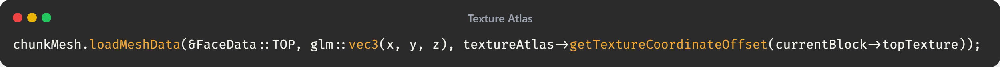

Cryogen Boss Fight
Recreating the Calamity Boss Fight
This was my submition for my introduction to C# programming module for Staffordshire University, and features a recreation of the popular boss Cryogen from Calamity. Obvious changes had to be made to support the top down view of the game, however all attacks and design desitions where inspired by the original boss.
Solution
In my first system, each block was its own mesh. Whilst hidden faces where still culled, the renderer still issued thousands of draw calls a frame - an inefficient approach as modern GPU's are optimized for fewer, larger draw calls.
This new system bakes the mesh of each chunk at the start of run time instead. All mesh chunks are then rendered together, reducing the thousands of render calls to more like 32 or 64 depending on the render distance set in the configuration.
Texture Atlas
Another system implemented in this version is a texture atlas. This means each face of the mesh can be rendered without needing to take breaks for different voxel types.
To use this, the texture coordinates of each block would be fetched from the texture atlas instance and pushed to the chunk's mesh.
Terrain Generation
The generated terrain uses a perlin noise implementation to span very large distances without the need of manually building a map. I took a similar approach to Minecraft when it came to using perlin noise, where multiple different layers of perlin noise are used on top of each other

This is a very simple usage of perlin noise, and has the issue where a border is formed every 128 chunks, however the generation still expands infinitely, essentially looping the generated terrain there onwards.
Expansion
If i was to work on this project further, the first change i would work on would be the addition of trees. My first attempt did have trees; however they where done in a way where they wherent consistent, using the inbuilt rand function to determine where to place them. They also where very simply implemented always having the same shape. Preferably i would want a more procedual approach.